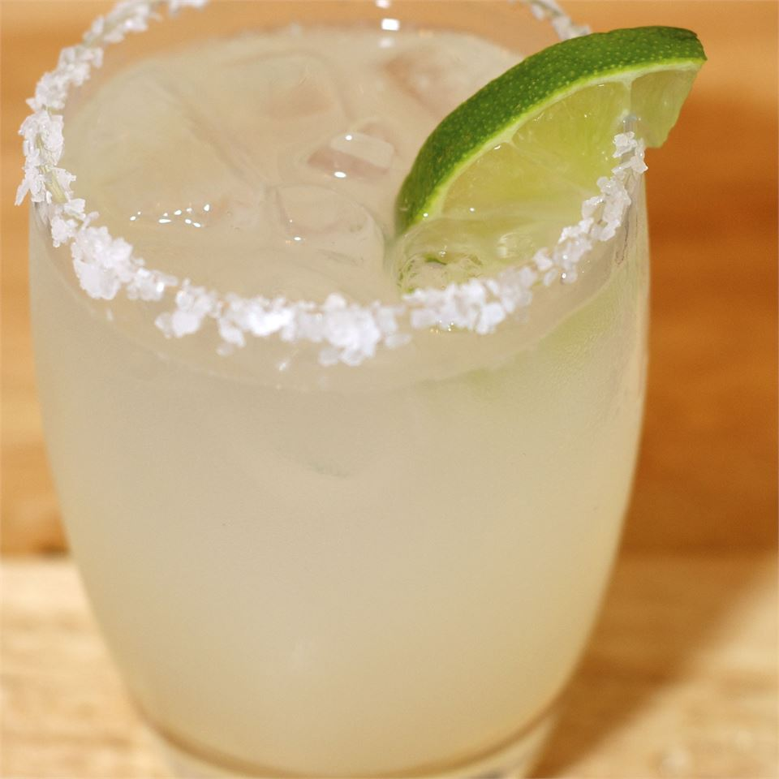

The Salty Chihuahua

Description
The Salty Chihuahua is a variation of the famous Salty Dog. While the latter makes use
of juicy grapefruit, the former uses tart lime juice and natural lemonade!
Ingredients
- 1 Lime Wedge
- Lime Juice
- Coarse Salt
- Ice
- 1 ounce of Jigger Tequila
- 5 ounces of lemonade
Steps
- Wet the rim of an old fashioned glass with lime juice
- Dip the rim in salt
- Fill glass with ice
- Pour tequila and lemonade
- Squeeze and drop lime wedge
- Stir and enjoy!